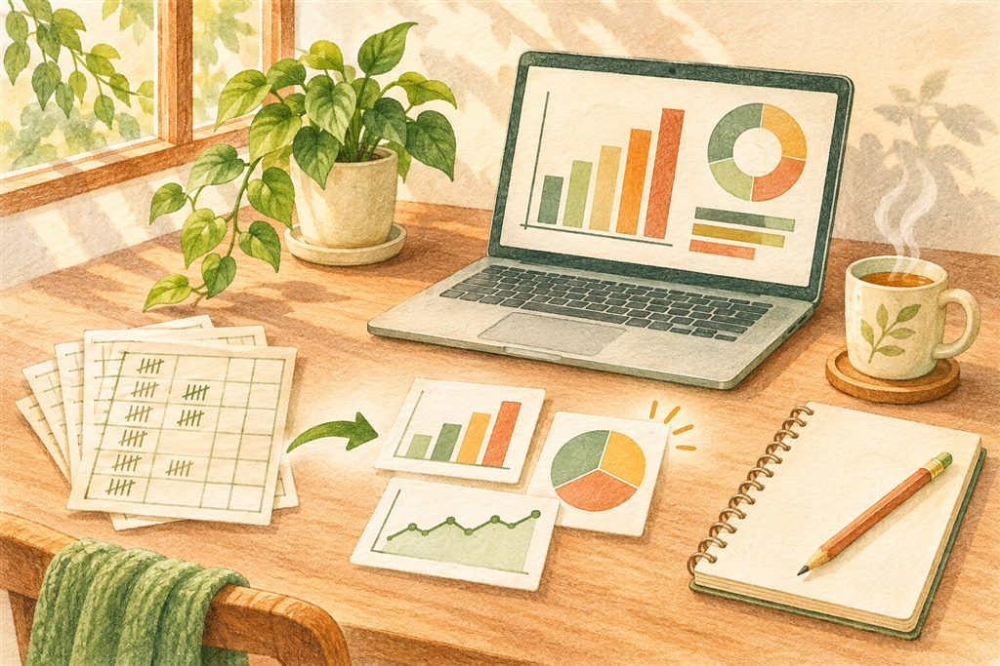
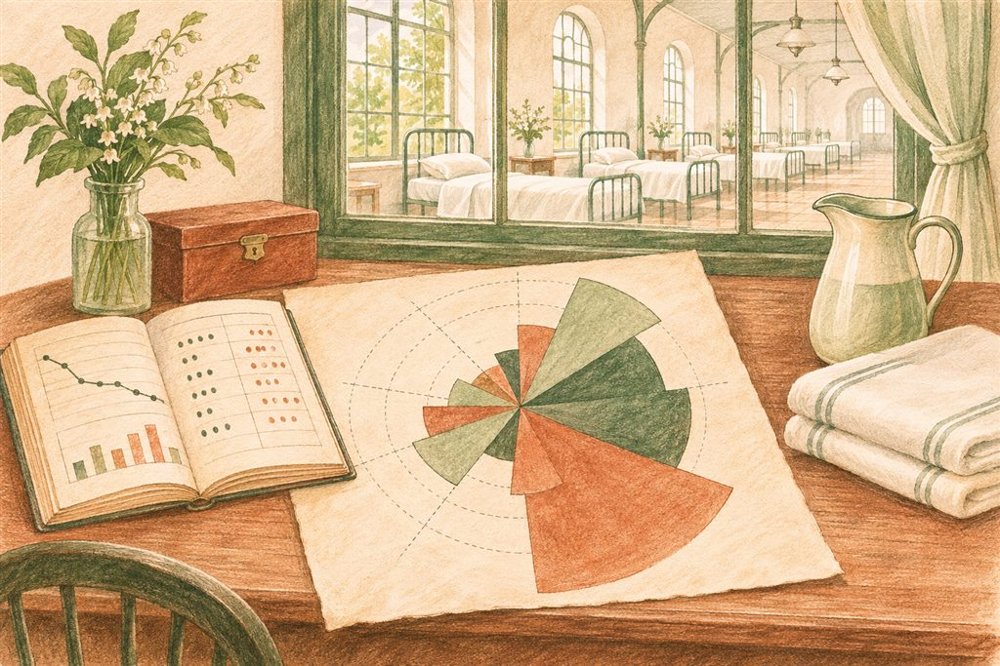
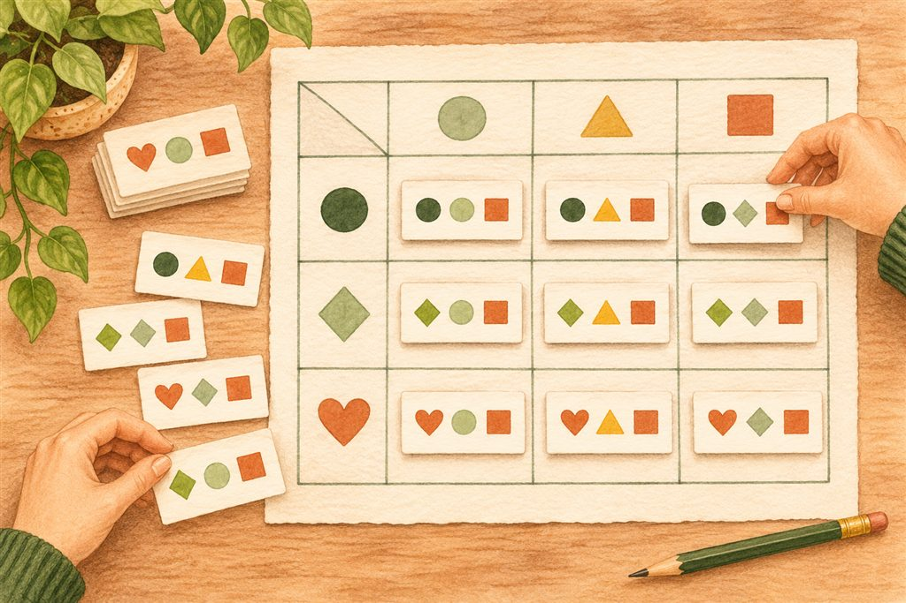
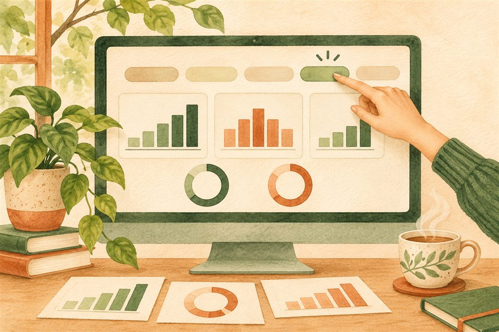

가정을 세웁니다
회원가입 없이 자격증만 받는 이유가, 선배에게 들은 이야기 때문일 수 있다고 생각합니다.
업무를 바꾸는 데이터 활용 · 복습 노트
모은 데이터로 설득하는 법.
숫자를 그림으로 바꾸면, 사람이 움직입니다.
표 한 장에서 시작해 다음 행동을 정하는 화면까지,
차근차근 함께 복습해 보세요.

같은 숫자라도 표로 내밀면 읽히지 않고,
그림으로 보여 드리면 변화의 이유가 보입니다.
크림전쟁은 1853년에 시작되었습니다. 후방기지에 배치된 한 간호사이자 통계학자는 군인들이 전투뿐 아니라 전염병으로 목숨을 잃는 현실에 주목했습니다. 그는 사망 원인을 기록하고, 원인별 사망의 크기를 꽃잎처럼 펼친 로즈 다이어그램으로 보여 주었습니다.

흔히 인용되는 변화는 사망률 42% → 2%입니다. 시간 순서를 기억해 주세요. 사망률은 1855년 위생을 개선한 뒤 떨어졌고, 로즈 다이어그램은 전쟁 뒤인 1858년 보고서에 실려 군 병원 개혁을 이끌었습니다. 그림이 먼저 사망률을 낮춘 것이 아니라, 기록과 위생 개선의 결과를 그림이 설득력 있게 전달한 것입니다.
그가 설득해야 했던 사람들은 통계학자가 아니라 결정권을 쥔 사람들이었습니다. 기관의 보고서를 올리실 때도 비슷합니다. 숫자를 모두 적는 것에서 한 걸음 더 나아가, 무엇이 문제이고 무엇을 바꿔야 하는지 보이게 해 드리는 일이 필요합니다.
표는 개별 금액이나 날짜를 확인할 때 유용합니다. 반면 그림은 어느 항목이 큰지, 언제 변화가 있었는지 빠르게 알아보게 합니다. 정확한 기록을 바탕으로, 전달하려는 질문에 맞게 두 가지를 함께 써 보세요.
분석의 끝은 숫자가 아니라,
다음에 무엇을 할지 정하는 일입니다.
강의에서는 협회 회원 45,000명의 데이터를 분석한 사례를 살펴보았습니다. 출발점은 “선배를 통해서 회원가입을 하지 않아도 된다는 이야기를 듣고, 자격증만 받는 것은 아닐까?”라는 가정이었습니다.
회원가입 없이 자격증만 받는 이유가, 선배에게 들은 이야기 때문일 수 있다고 생각합니다.
모아 둔 회원 데이터를 분석해 가정을 확인합니다. 느낌에서 멈추지 않고 기록을 살펴봅니다.
회원가입 혜택을 담은 포스터를 만들어 서울지역 학과 사무실에 배포하는 대응 계획으로 옮깁니다.
핵심은 화려한 그래프가 아닙니다. “어떤 문제를 확인하려는가?”를 먼저 정하고, 그 답에 따라 안내 방식이나 자원 배분을 바꾸는 것입니다. 강의에 제시되지 않은 분석 결과의 비율이나 인과관계를 덧붙여 단정할 필요도 없습니다.
구글 스프레드시트에는 한 줄에 한 건씩, 한 칸에 한 가지씩 기록해 주세요. 날짜는 날짜 열에, 숫자는 금액 열에, 글자는 비목이나 지급 방법 열에 모읍니다. 같은 종류의 기록이 한 열에 모여 있어야 피벗 테이블이 제대로 묶어 줍니다.

지출 한 번을 한 행에 적습니다. 다음 지출은 다음 행에 적으세요.
날짜와 비목, 금액을 서로 다른 열로 나누어 주세요.
금액 열에는 숫자를, 날짜 열에는 날짜를 넣어 주세요.
| 날짜 | 비목 | 지급 방법 | 지출 금액 |
|---|---|---|---|
| 2026-07-03 | 식비 | 카드 | 150,000 |
| 2026-07-08 | 교통비 | 카드 | 50,000 |
| 2026-07-15 | 재료비 | 이체 | 100,000 |
각 지출이 독립된 한 줄입니다. 금액을 고치거나 새 지출을 추가해도, 같은 열의 규칙을 유지할 수 있습니다. 합계는 원본 중간에 끼워 넣지 않고 피벗에서 구합니다.
| 7월 지출 정리 | ||
|---|---|---|
| 식비 · 7월 3일 | 카드 150,000원 | |
| 7월 8일 교통비 · 카드 | 50,000원 | |
| 재료비 | 7월 15일 이체 | 100,000원 |
| 중간 합계 | 300,000원 | |
날짜·비목·지급 방법이 섞여 있고 셀도 합쳐져 있습니다. 사람은 읽을 수 있어도 컴퓨터가 같은 기준으로 묶기 어렵습니다. 원본은 일정한 열로 나누고, 보기 좋은 보고용 표는 피벗으로 따로 만드세요.
“날짜는 날짜대로, 숫자는 숫자대로, 글자는 글자대로 모아내는 게 어렵지. 이것만 딱 잘 되잖아요. 피벗 테이블은 이렇게 간단해요.”강의에서 강조한 말
한 줄씩 쌓인 원본은 수정하기 쉽지만, 비목별 합계를 한눈에 읽기는 어렵습니다. 피벗 테이블은 보고 싶은 열을 골라, 보고서에서 익숙하게 보던 가로·세로 표로 돌려 줍니다. 함수를 몰라도 자주 쓰는 합계와 횟수를 여기에서 구할 수 있습니다.
범위를 정할 때 끝 행 번호를 지워 보세요. 예를 들어 A1:F40을 A1:F로 바꾸면 F열까지, 아래로는 열 끝까지 포함합니다. 강의의 “F40 대신 F”는 범위의 마지막 행 번호를 지운다는 뜻입니다. 이렇게 잡아 두면 나중에 추가한 줄도 원본 범위 안에 들어갑니다.
아래 단계를 누르거나 ‘다음 단계’를 눌러 보세요. 연습용 화면이며 실제 메뉴를 열지는 않습니다.
열 끝까지 범위를 넓히면 아직 기록하지 않은 빈 행도 포함됩니다. 그 때문에 피벗에 ‘공백’ 항목이 보일 수 있습니다. 피벗 편집기의 필터에 비목처럼 실제로 값이 있어야 하는 열을 추가하고, 값 목록에서 공백의 체크를 풀어 숨깁니다.
행과 열의 자리는 바꿔도 됩니다. 다만 항목이 많은 쪽을 행에 두면 옆으로 길어지지 않아 위아래로 스크롤하며 읽기 편합니다. 원본을 고치는 대신, 피벗에서 기준의 자리를 바꾸어 보세요.
행에 날짜를 넣으면 처음에는 일별 합계가 나옵니다. 피벗 결과의 날짜 칸을 오른쪽 클릭한 뒤, 피벗 날짜 그룹 만들기 › 연월을 선택하면 월별로 묶입니다.
같은 지출 금액 열을 값에 한 번 더 추가해 보세요. 하나는 SUM(합계)으로 두고, 다른 하나는 COUNTA(비어 있지 않은 값의 개수)로 바꿉니다. 그러면 금액과 지출 횟수가 나란히 보입니다. 지출 한 건마다 금액이 한 칸씩 입력되어 있다는 전제에서 횟수로 읽습니다.
가상 지출 8건입니다. 날짜 묶기와 집계 방식을 각각 바꾸어 보세요.
실적을 매번 손으로 모아 문서를 만드는 대신, 쌓이는 데이터를 읽는 화면을 한 번 만들어 둡니다. 연인원·실인원·회건이 한눈에 보이면 매번 ‘보고서를 만드는 일’에서 ‘현재 상태를 확인하는 일’로 바뀝니다. 이것이 대시보드입니다.

피벗 테이블을 선택한 뒤 삽입 › 차트를 누릅니다. 차트에 ‘총계’까지 섞이면 개별 항목과 전체가 함께 그려져 비교하기 어렵습니다. 피벗의 연필 모양 편집 버튼으로 편집기를 열고, 해당 행·열의 합계 표시를 꺼 주세요.
데이터 › 슬라이서 추가는 필터를 눈에 보이는 조작 도구로 꺼내는 기능입니다. 데이터 범위와 기준 열을 정하고 연도나 담당 구분을 선택하면, 같은 데이터를 쓰는 피벗 표와 차트를 함께 골라 볼 수 있습니다.
위의 날짜 실습과 같은 가상 지출 8건입니다. 선택한 조건에 따라 합계·표·차트가 함께 바뀝니다.
각 막대의 길이는 전체 예시의 최대 비목 합계인 440,000원을 기준으로 합니다. 필터를 바꿔도 같은 눈금으로 비교합니다. 예시 차트에는 총계를 별도 막대로 넣지 않았습니다.
피벗 테이블에 무엇을 넣을지 헷갈리시면, 질문을 먼저 읽어 보세요. 무엇별로 볼지는 행과 열에, 얼마인지·몇 번인지는 값에 놓습니다. 같은 원본도 질문에 따라 다른 표가 됩니다.
분석 뒤에는 원본에서 숫자가 맞는지 확인하고, 그 결과로 할 일을 한 가지 정해 보세요. 비목별 지출이 다르다고 곧바로 낭비라고 판단하거나, 참여 기록이 많다고 곧바로 실인원이 많다고 판단하지 않는 것이 중요합니다.
강의에서 다룬 내용을 질문과 답으로 다시 정리했습니다. 궁금한 항목을 누르면 답이 펼쳐집니다.
네. 날짜·숫자·글자가 각각 정리된 원본이라면 행·열·값에 필요한 열을 추가하는 것부터 시작하시면 됩니다. 비목별 합계나 월별 횟수처럼 자주 쓰는 통계는 복잡한 함수를 직접 쓰지 않아도 만들 수 있습니다.
데이터 범위의 끝을 확인하세요. A1:F40이면 40행까지만 포함합니다. A1:F처럼 끝 행 번호를 빼면 그 아래에 들어오는 행도 범위 안에 포함됩니다. 필터에서 새 항목이 제외되어 있는지도 함께 확인하세요.
열 끝까지 잡은 범위에 빈 행이 있기 때문일 수 있습니다. 피벗 편집기의 필터에 비목처럼 값이 있어야 하는 열을 추가하고, 값 목록에서 공백 체크를 풀어 숨기세요. 실제 기록에서 빠진 값이 있는 경우에는 원본도 보완해 주세요.
가로로 비교할 항목은 열, 세로로 읽을 항목은 행에 둡니다. 항목이 많은 쪽을 행에 놓으면 옆으로 길어지는 것을 줄일 수 있습니다. 강의 예시는 행에 비목, 열에 지급 방법, 값에 지출 금액입니다.
날짜 그룹이 ‘월’로 되어 있는지 확인하세요. 날짜 칸을 오른쪽 클릭하고 피벗 날짜 그룹 만들기에서 ‘연월’을 고르면 작년 7월과 올해 7월을 따로 볼 수 있습니다.
지출 금액 열을 값에 두 번 추가하세요. 하나는 SUM으로, 하나는 COUNTA로 설정합니다. COUNTA는 금액이 입력된 셀을 세므로, 지출마다 금액이 들어 있는지 확인해야 실제 지출 횟수와 맞습니다.
총계와 개별 항목을 한꺼번에 그렸기 때문입니다. 피벗의 연필 모양 편집 버튼을 눌러 해당 행·열의 합계 표시를 끈 뒤 차트를 다시 확인하세요. 총액은 대시보드의 별도 숫자로 보여 주셔도 좋습니다.
슬라이서에서 선택한 기준 열과 데이터 범위부터 확인하세요. 연결하려는 피벗 표와 차트가 같은 원본 범위를 사용하는지 살펴봅니다. 이 페이지의 연습 화면은 선택 조건에 따라 표와 차트가 함께 바뀌는 원리를 보여 줍니다.
틀려도 괜찮습니다. 정답을 고른 뒤 ‘정답과 해설 보기’를 눌러 이유까지 확인해 보세요. 답을 바꾼 뒤 다시 확인하실 수도 있습니다.
처음부터 완벽한 화면을 만들 필요는 없습니다. 자주 확인하는 지출 표 하나를 골라, 아래 순서대로 해 보세요. 끝낸 항목을 누르면 진행 상황이 표시됩니다.
오늘 만들 결과물
비목 × 지급 방법 피벗 표 하나, 비목별 지출 차트 하나, 골라 보는 슬라이서 하나. 마지막에는 그 화면을 보고 정한 다음 행동을 한 문장으로 적습니다.
체크 상태는 이 브라우저에 저장됩니다.
작은 표 하나가, 더 나은 결정을 만드는 시작입니다.